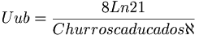

De: La Frikipedia, la enciclopedia extremadamente seria.
De: La Frikipedia, la enciclopedia extremadamente seria. De: La Frikipedia, la enciclopedia extremadamente seria.

|
Este artículo necesita ser ilustrado. Busca una afoto en nuestro depósito de imágenes o donde sea y ponla, pero que no sea pr0n, que se cabrea el señor del adSense y nos corta el grifo de los dólare. Y sin dólare no hay servidor... |
Dícese de uno de los elementos de la tabla periódica que más polémica ha suscitado.
Contrariamente a la rumorología, se ha demostrado que el uyuntrío existe, y no es una farsa como la llegada del hombre a la Luna o el ColaCao.
Su creación se produjo en Chernobyl fruto de una reacción química muy compleja:

Esto es, en definitiva, aplicando numerosos teoremas (que por su complejidad no explicaremos), como el silogismos aristotélicos, que 'los isótopos pesados del núcleo de un átomo se adhirieron al tejido de grasas vegetales de churros y porras de una churrería colindante'. En resumen, que los churros mutaron, para aquellos menos avispados
Sobre el uyuntrío se han contado infinidad de historias falsas, especialmente a los niños para que se fueran a la cama. Su descubrimiento se atribuye por lo general al conocido Gesellschaft für Schwerionenforschung (documentaoos si dudais de su existencia), habitualmente creído como un centro de experimentación, pero que es en realidad un Sex Shop. Es por tanto, que podemos echar por tierra sus incongruentes teorías que afirman que el uyuntrío se produce 'bombardeando una lámina de plomo con iones acelerados de zinc con un acelerador lineal'. Como ven, no la entiende ni S. Pedro, por lo que la tomaremos como inválida, a falta de inteligencia para demostrarla.
Éstas son escasas en número, pero muy importantes.
Se calcula que es de unos 0,24 milisegundos. Este periodo de tiempo sería alcanzado únicamente Chuk Norris al parar el cronómetro de su reloj de agujas en dicho momento. Sin embargo, esto no sería de utilidad, puesto que todos sabemos que el mérito consiste en pararlo cuanto los segundos llegan a cero. Tal sería el enfado de nuestro sujeto, que de una patada voladora crearía el Meitnerio.
Se calcula que esta es de 285 de media. Desgraciadamente, los cálculos se perdieron en un desgraciado incendio en la cafetería de la Universidad de Salamanca, en la que se acumulaban gran cantidad de saberes. Entre otras importantes obras se perderían la receta de la tortilla de cebolla o el órdago de farol al mus. Afortunadamente, prácticamente la totalidad de estas obras se recuperarían; pero los años perdidos en ambos ámbitos, harían disminuir en demasía las habilidades cocineras y ludópatas de los jóvenes universitarios. Afortunadamente, poco a poco se empiezan a recuperar las capacidades de juego, aunque no así el gusto por la buena gastronomía. Sin embargo, parece que los guiris, celosos de ello, quieren implantar el Plan de Bolonia, que hace obligatoria la asistencia a clases banales, e impide al alumnado practicar lo que más utilidad tendrá para la vida.
Según los expertos es metálico plateado, blanco o gris. Otras teorías afirman que tiene idéntico color que el uyuyupio. Vamos, que nadie tiene ni puñetera idea.
Ni sólido, ni líquido ni gaseoso, sino todo lo contrario.
Para qué nos vamos a engañar, absolutamente ninguna. Se especuló que podría ser un buen complemento de la mortadela y el choped en bocadillo, pero tras realizar diversas pruebas en jóvenes de entre infinito más uno y tropecientosmil años, el resultado fue inconcluyente. La única conclusión fue que su ingesta provoca la muerte, pero el fin primero, demostrar si es apta como aliño, no resultó con éxito.
Tabla periódica de los elementos
| ||||||||||||||||||||||||||||||||||||||||||||||||||||||||||||||||||||||||||||||||||||||||||||||||||||||||||||||||||||||||||||||
|
Autor(es):